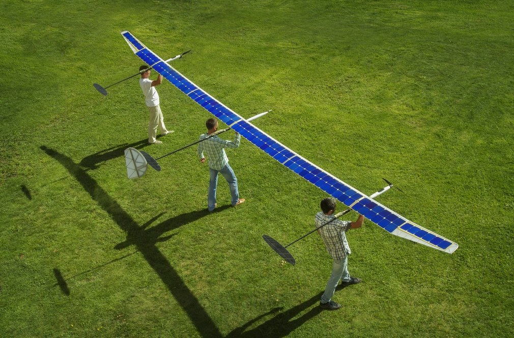
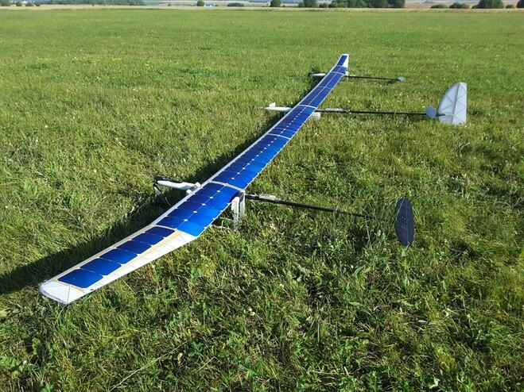
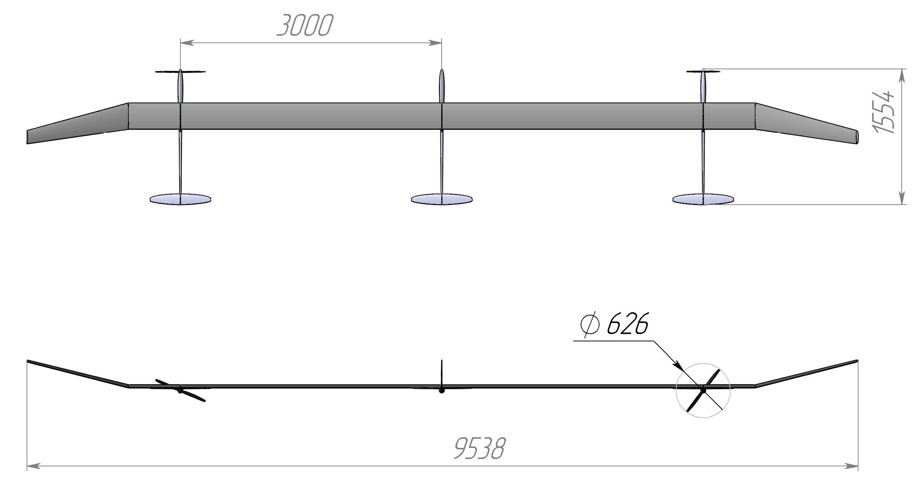

Масштабная модель атмосферного спутника "СОВА"
проект реализован совместно с Фондом перспективных исследований
В настоящее время актуальна тема создания летательных аппаратов с питанием от солнечных батарей, и логическим продолжением является создание атмосферного спутника, способного летать неограниченное время и на неограниченные расстояния, при этом оставаясь на высотах более 13 км, что исключает взаимодействия с гражданской авиацией.
Попыток создания на сегодняшний день таких аппаратов достаточно, и возможность таких полётов уже доказана. Для начала практической эксплуатации таких аппаратов нужно:
- улучшить лётные характеристики носителя;
- увеличить КПД солнечных батарей;
- увеличить удельную ёмкость накопителя энергии.

| Ёмкость батарей (Li-Ion) | 1272 Вт/ч |
| Мощность для гор. полёта | 75 Вт |
| Мощность для набора | 250 Вт |
| Мощность для работы автопилотов | <15 Вт |
| Размах крыла | 9.5 м |
| Взлётный вес | 11800 гр |
| Мощность солнечных панелей | >270 Вт |
| Скорость полёта | ~9 м/с |
Преимущества данной схемы:
- Концептуальным преимуществом данной схемы перед остальными концепциями атмосферных спутников является возможность реализации лёгкой конструкции с рекордно большим удлинением крыла.
- Большое удлинение крыла позволила реализовать многофюзеляжная схема ЛА.
- Низкой массы удалось добиться в результате установки на все фюзеляжи синхронизированных автопилотов в рамках распределенной системы управления (три АП). Реализация распределенной системы управления избавила от необходимости обеспечивать высокую жесткость крыла (на изгиб и кручение). Для сохранения заданного прогиба всего крыла система автоматического управления изменяет угол атаки и, как следствие, подъемную силу на требуемом участке крыла.
- Одним из самых важных преимуществ данной схемы предполагается её устойчивость к атмосферным возмущениям за счёт активного контроля деформации. Полный контроль над устойчивостью и управляемостью ЛА такой конфигурации позволяет осуществлять полет в сложных метеоусловиях без риска разрушения аппарата из-за критического изгиба крыла.
Испытательный 50-часовой полёт 14.07 - 17.07 2016 г.
{kind=link}
Взлёт, управление и посадка аппарата осуществлялись на действующем аэродроме возле г. Орёл
{kind=link}
Мощностные хар-ки во время 50-ти часового полёта
Запасённая энергия в аккумуляторах
График построен по реальным данным телеметрии полёта.
{kind=link}
На высоте 4000 метров средняя скороподъёмность 0.9 м/с
{kind=link}
Участники 50-часового полёта
{kind=link}
Команда проекта "Сова"
Перспективы
Перспектива использования атмосферных спутников аэродинамического типа неразрывно связана с гибкостью использования воздушного пространства, аналогия может быть проведена со спутниками, которые двигаются по орбите земли, и для которых не существует границ государств или запретных зон. Аппарат, который берёт много полезной нагрузки должен не только обладать выдающимися лётными характеристиками а также высокоэффективной силовой установкой, аккумуляторами с высокой удельной ёмкостью, солнечными панелями с высоким КПД, но и иметь возможность значительно менять высоту полёта в течении суток, в летнее время он может летать за полярным кругом, а в зимнее лучше переместиться на юг за экватор, также он может увеличивать продолжительность нахождения на солнце, днём двигаясь за солнцем, а ночью навстречу.
В дальнейшем, БЛА необходимо дополнить топливными элементами, работающими на водороде (ТПТЭ), которые позволят обеспечить функционирование БЛА в условиях малого уровня солнечной радиации.